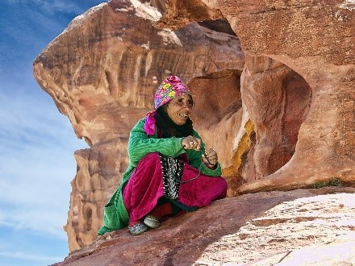
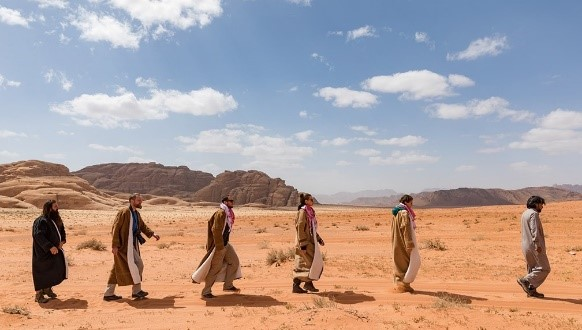
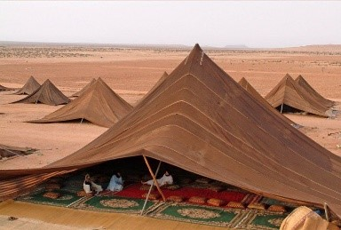
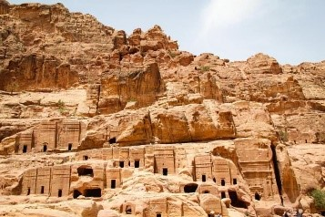
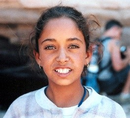

2011 Japanese Tsunami
|Where Did This Disaster Take Place?|
The Jordan Bedouins mostly live in the Arabian and the Syrian Deserts, The Sinai in Egypt and the Sahara desert.
|What Is There Traditionl Way Of Living?|
They Traditionaly Live in Tents, moving with there herds across vast areas of arid land in search of grazing areas.
|Bedouin Pastimes|
from poetry recitation and traditional sword dances, to classes teaching traditional tent knitting and playing traditional Bedouin musical instruments. Traditions like camel riding and camping in the deserts are also popular leisure activities for urbanised Bedouins who live within close proximity to deserts or other wilderness areas.
|But What Challenges Do They Face?|
A lot of things – illegal building on state lands, polygamy, marriage among relatives, murder, blood feuds, protection and smuggling.
|So How Are The Tribes Classified?|
Well each Tribe is acctually classified by the animal that they base there livelihoods on.
